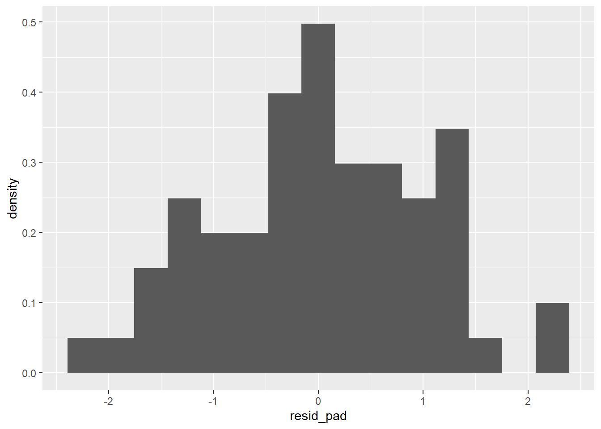
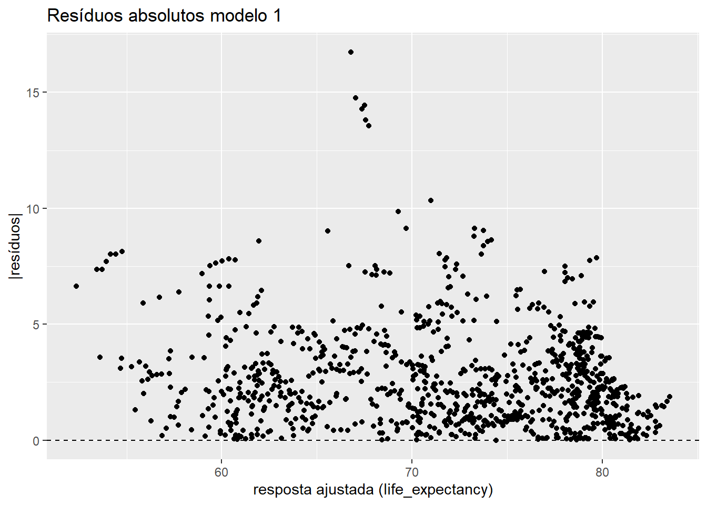
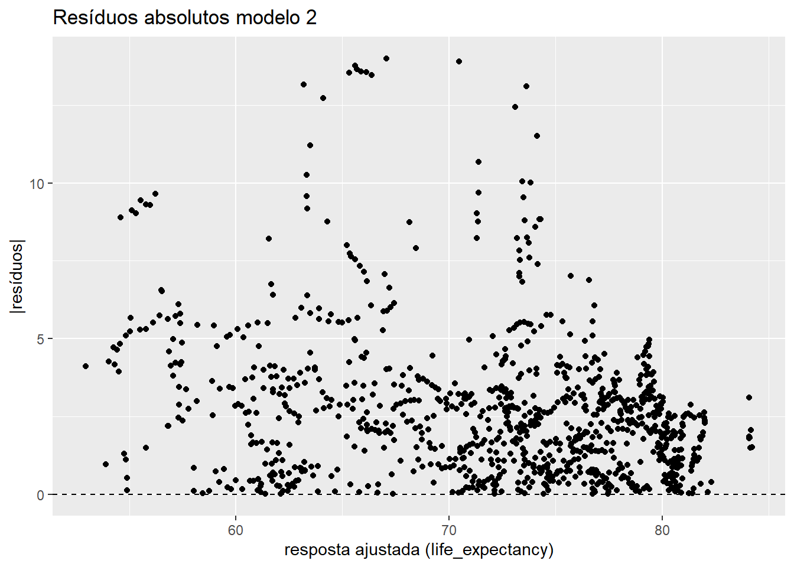
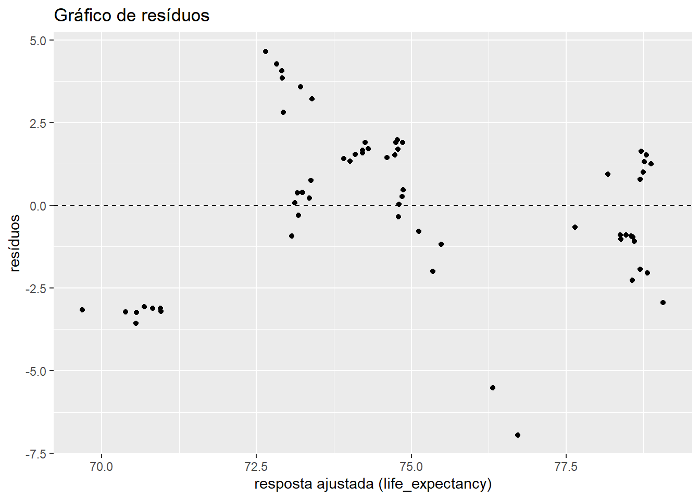
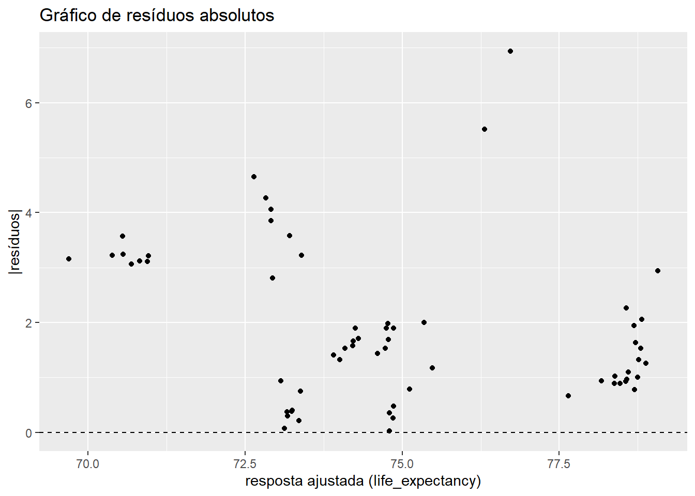

Os dados disponíveis no arquivo data/owid.csv foram obtidos do portal Our World in Data, cuja missão é publicar pesquisas e dados relacionados a grandes problemas mundiais como pobreza, doenças, fome, mudanças climáticas, guerras, riscos existenciais e desigualdade.
Os dados originais foram pré-processados no sentido de remover observações faltantes. Há um total de 985 observações coletadas para 21 variáveis:
Variáveis
continent: continente em que está o país
entity: nome do país
code: código do país
year: ano
birth_rate: número de nascimentos com vida por 1.000 habitantes na população.
child_mortality: mortes de crianças menores de 5 anos de idade (% nascimentos)
co2_emission_pc: emissões anuais de CO2 per capita (t/pessoa)
deaths_solid_fuels_pollution: mortes resultantes de poluição por queima de combustíveis sólidos em ambientes internos (%)
deaths_particulate_pollution: mortes resultantes de poluição por material particulado em ambientes externos (%)
deaths_air_pollution: mortes resultantes de poluição do ar ambiente (%)
deaths_ozone: mortes resultantes de poluição por ozônio em ambientes externos (%)
deaths_sanitation: mortes resultantes de falta ou precariedade de acesso a saneamento básico (%)
electricity_demand: geração total de eletricidade anual, ajustada por importação e exportação de eletricidade (TWh)
energy_use_pc: consumo de energia médio anual (eletricidade, transporte, aquecimento, preparo de alimentos) per capita (KWh/pessoa)
expected_schooling: expectativa do número de anos de educação que uma criança que entra no sistema escolar deve receber
happiness_cantril_ladder: nível de felicidade médio populacional (0-10)
gdp_pc: produto interno bruto per capita ($ internacional, referência 2017)
life_expectancy: expectativa de vida no nascimento (anos)
milk_consumption_pc: consumo de leite médio anual per capita (kg)
no_water: população sem acesso a fontes seguras de água (encanada, poços, fontes, chuva e envasada) (%)
urban_population_percent: população habitante de áreas urbanas (% população total)
Análise Exploratória de Dados
Análise Preliminar e Preparação da Massa de Dados
Nesta seção, é conduzida a análise exploratória da massa de dados owid, a fim de compreender suas características principais. De modo geral, a ideia inicial é procurar por possíveis correlações entre a felicidade média da população e as demais variáveis.
Inicialmente, vamos limpar a área de trabalho e iniciar a leitura dos dados.
# limpa área de trabalhorm(list =ls())# carrega pacote `tidyverse`library(tidyverse)# carrega dadosowid <-read_delim("data/owid.csv", delim =",", col_names =TRUE)# codifica variável `continent` como fatorowid$continent <-as.factor(owid$continent)str(owid)
Observamos, portanto, um total de 985 dados, sendo três colunas apresentadas como strings (continent, entity e country_code) e as demais como numéricas. Não obstante, os nomes das variáveis são intuitivos e não necessitam de alterações.
Dados faltantes
Agora, vamos verificar a presença de dados faltantes na base. Para isso, vamos utilizar o comando summary().
# verifica nomes das variáveissummary(owid)
continent country_code entity year
Africa :293 Length:985 Length:985 Min. :2011
Asia :240 Class :character Class :character 1st Qu.:2014
Europe :280 Mode :character Mode :character Median :2016
North America: 95 Mean :2016
Oceania : 14 3rd Qu.:2018
South America: 63 Max. :2019
birth_rate child_mortality co2_emission_pc
Min. : 5.92 Min. : 0.200 Min. : 0.02473
1st Qu.:11.20 1st Qu.: 0.580 1st Qu.: 0.76427
Median :18.40 Median : 1.610 Median : 2.77652
Mean :20.85 Mean : 3.049 Mean : 4.62566
3rd Qu.:28.75 3rd Qu.: 4.730 3rd Qu.: 6.63869
Max. :48.36 Max. :15.410 Max. :32.87282
deaths_solid_fuels_pollution deaths_particulate_pollution deaths_air_pollution
Min. : 0.00 Min. : 2.48 Min. : 2.66
1st Qu.: 0.28 1st Qu.: 20.18 1st Qu.: 29.95
Median : 11.21 Median : 34.35 Median : 80.30
Mean : 50.50 Mean : 44.52 Mean : 96.29
3rd Qu.: 92.63 3rd Qu.: 63.66 3rd Qu.:157.51
Max. :281.26 Max. :200.29 Max. :314.45
deaths_ozone deaths_sanitation electricity_demand energy_use_pc
Min. : 0.000 Min. : 0.00 Min. : 0.05 Min. : 180.9
1st Qu.: 0.750 1st Qu.: 0.05 1st Qu.: 6.16 1st Qu.: 3623.2
Median : 1.410 Median : 0.56 Median : 16.21 Median : 15302.4
Mean : 2.115 Mean : 14.74 Mean : 167.62 Mean : 25020.4
3rd Qu.: 2.220 3rd Qu.: 22.27 3rd Qu.: 87.37 3rd Qu.: 33744.6
Max. :35.430 Max. :158.41 Max. :7444.69 Max. :188294.0
expected_schooling happiness_cantril_ladder gdp_pc life_expectancy
Min. : 4.983 Min. :2.567 Min. : 729.7 Min. :49.95
1st Qu.:11.455 1st Qu.:4.517 1st Qu.: 4776.6 1st Qu.:65.46
Median :13.720 Median :5.302 Median : 13086.0 Median :73.57
Mean :13.535 Mean :5.403 Mean : 19954.6 Mean :71.96
3rd Qu.:15.585 3rd Qu.:6.208 3rd Qu.: 29877.0 3rd Qu.:78.41
Max. :23.089 Max. :7.856 Max. :116283.7 Max. :84.36
milk_consumption_pc no_water urban_population_percent
Min. : 0.1835 Min. : 0.000 Min. : 11.78
1st Qu.: 19.3253 1st Qu.: 0.230 1st Qu.: 42.73
Median : 74.3830 Median : 2.930 Median : 60.31
Mean : 94.2947 Mean : 8.778 Mean : 59.32
3rd Qu.:153.9104 3rd Qu.:15.360 3rd Qu.: 77.38
Max. :364.5135 Max. :52.050 Max. :100.00
cat("\n")
print("Posição dos dados faltantes:")
[1] "Posição dos dados faltantes:"
which(is.na(owid))
integer(0)
Portanto, percebemos que não há dados faltantes na base, conforme esperado da filtragem prévia realizada pela professora. Com isso, iremos prosseguir para a analise exploratória dos dados.
Resumos gráficos
Histograma de felicidade média populacional:
ggplot(owid, aes(x = happiness_cantril_ladder)) +geom_histogram(aes(y =after_stat(density))) +# adiciona linha de densidade estimada (suavização)geom_density(lwd =1, colour =4,fill =4, alpha =0.25 ) +# adiciona dispersão unidimensional de `mpg`geom_rug(alpha =0.5)
Densidade de probabilidade de felicidade separado por cores para cada um dos continentes.
# Densidade por continenteggplot(owid, aes(x = happiness_cantril_ladder, fill = continent)) +geom_density(alpha =0.5, position ="identity")
Ao separar as densidades da variável felicidade por continente é possível verificar que o nível de felicidade das pessoas varia de acordo com o continente em que elas vivem.
Verificação de possíveis variáveis correlacionadas
Mesmo antes de observar os dados, conjectura-se que algumas variáveis possam ter maior correlação com o nível de felicidade da população. As variáveis escolhidas devido a uma suspeita de possuírem correlação com o nível de felicidade foram: acesso das pessoas a fontes seguras de água, mortalidade infantil, consumo de leite e pessoas vivendo com sistema sanitário precário. Assim, foram gerados os gráficos entre tais grandezas, de forma a verificar se existem correlações ou não.
Gráfico de dispersão para as variáveis felicidade e população sem acesso a fontes seguras de água.
# Visualização# Diagrama de dispersãoggplot(owid, aes(x = no_water, y = happiness_cantril_ladder)) +# adiciona pontosgeom_point() +theme(aspect.ratio =1)
É possível perceber uma correlação negativa entre as variáveis de falta de água e felicidade da população. Ao dividir os dados em cada um dos continentes é possível construir o seguinte gráfico:
# Visualização# Diagrama de dispersãoggplot(owid, aes(x = no_water, y = happiness_cantril_ladder, color = continent)) +# adiciona pontosgeom_point() +geom_smooth(method ="lm", se =FALSE) +theme(aspect.ratio =1)
Percebe-se uma tendência de queda de felicidade quanto mais pessoas estão sem acesso a fontes seguras de água. É possível conjecturar também que em continentes como a África e a Asia a felicidade das pessoas é menos sensível a fontes seguras de água que nos demais continentes.
Um outro gráfico analisado é o de felicidade pela mortalidade infantil.
# Visualização# Diagrama de dispersãoggplot(owid, aes(x = child_mortality, y = happiness_cantril_ladder, color = continent)) +# adiciona pontosgeom_point() +geom_smooth(method ="lm", se =FALSE) +theme(aspect.ratio =1)
Também é possível perceber através das linhas de tendência que no continente africano a felicidade da população é menos sensível a variações da mortalidade infantil que nos outros continentes.
Uma outra análise feita foi da felicidade pelo consumo de leite da população e foi possível construir o seguinte gráfico:
# Visualização# Diagrama de dispersãoggplot(owid, aes(x = milk_consumption_pc, y = happiness_cantril_ladder, color = continent)) +# adiciona pontosgeom_point() +geom_smooth(method ="lm", se =FALSE) +theme(aspect.ratio =1)
Ao observar os dados, aparentemente em todos os continentes um consumo maior de leite está correlacionado com uma maior felicidade da população com linhas de tendência de inclinações semelhantes. Porém, os dados aparentam estar muito dispersos das linhas de tendência, precisando assim de novas métricas para confirmar ou refutar uma correlação entre os dados.
Também foi gerado o gráfico de felicidade por mortes correlacionadas a um sistema sanitário precário.
# Visualização# Diagrama de dispersãoggplot(owid, aes(x = deaths_sanitation, y = happiness_cantril_ladder, color = continent)) +# adiciona pontosgeom_point() +geom_smooth(method ="lm", se =FALSE) +theme(aspect.ratio =1)
É possível perceber um efeito semelhante das mortes por motivos sanitários se compararmos com a falta de acesso à fontes seguras de água e de mortalidade infantil. As variáveis aparentam estar correlacionadas e também aparenta que a sensibilidade da felicidade com relação a mortes por falta de saneamento é menor no continente africano se comparado aos demais.
Análise de Regressão
Parte 1
Assuma que um modelo de regressão linear simples é adequado para modelar a relação da variável de resposta happiness_cantril_ladder a cada uma das variáveis explicativas: birth_rate, deaths_air_pollution,expected_schooling, life_expectancy.
Construa um modelo de regressão para cada um desses pares de variáveis
# Constrói modelo de regressão linear simples para taxa de natalidadeowid_rls_birth <-lm(happiness_cantril_ladder ~ birth_rate, data = owid)# Variável de resposta: happiness_cantril_ladder# Variável explicativa: birth_rateowid_rls_birth
# Constrói modelo de regressão linear simples para mortes por poluição do arowid_rls_Dair <-lm(happiness_cantril_ladder ~ deaths_air_pollution, data = owid)# Variável de resposta: happiness_cantril_ladder# Variável explicativa: deaths_air_pollutionowid_rls_Dair
# Constrói modelo de regressão linear simples para expectativa de escolaridade.owid_rls_ExpSchool <-lm(happiness_cantril_ladder ~ expected_schooling, data = owid)# Variável de resposta: happiness_cantril_ladder# Variável explicativa: expected_schoolingowid_rls_ExpSchool
# Constrói modelo de regressão linear simples para expectativa de vida.owid_rls_LifeExpec <-lm(happiness_cantril_ladder ~ life_expectancy, data = owid)# Variável de resposta: happiness_cantril_ladder# Variável explicativa: life_expectancyowid_rls_LifeExpec
Construa gráficos de dispersão (separados) com as retas de regressão ajustadas para cada caso
# gera gráfico de dispersão para taxa de natalidadeggplot(owid, aes(x = birth_rate, y = happiness_cantril_ladder)) +geom_point() +# adiciona reta de regressão estimadageom_smooth(method = lm, se =FALSE)
# gera gráfico de dispersão para taxa de mortes por poluição do arggplot(owid, aes(x = deaths_air_pollution, y = happiness_cantril_ladder)) +geom_point() +# adiciona reta de regressão estimadageom_smooth(method = lm, se =FALSE)
# gera gráfico de dispersão para taxa de natalidadeggplot(owid, aes(x = expected_schooling, y = happiness_cantril_ladder)) +geom_point() +# adiciona reta de regressão estimadageom_smooth(method = lm, se =FALSE)
# gera gráfico de dispersão para expectativa de vidaggplot(owid, aes(x = life_expectancy, y = happiness_cantril_ladder)) +geom_point() +# adiciona reta de regressão estimadageom_smooth(method = lm, se =FALSE)
Interpretando os modelos utilizados, temos que as retas de regressão que melhor se aproxima, para descrever a dependência entre as grandezas selecionadas duas a duas são:
Felicidade x Taxa de natalidade:
happiness_cantril_ladder = 6.93 + -0.07 *birth_rate
Felicidade x Mortes por poluição do ar: happiness_cantril_ladder = 6.57 + -0.01 *deaths_air_pollution
Felicidade x Expectativa de escolaridade: happiness_cantril_ladder = 1.65 + 0.28 *expected_schooling
Felicidade x Expectativa de vida: happiness_cantril_ladder = -2.48 + 0.11 *life_expectancy
Colocando em um ambiente com os números escritos expressamente:
Obtenha o MSE para cada modelo. Que variável explicativa produz menor variabilidade em torno da reta de regressão ajustada?
# MSE para taxa de natalidadeprint(paste("O MSE para taxa de natalidade é:", mean(owid_rls_birth$residuals^2)))
[1] "O MSE para taxa de natalidade é: 0.666798670114976"
# MSE para mortes por poluição do arprint(paste("O MSE para mortes por poluição do ar é:", mean(owid_rls_Dair$residuals^2)))
[1] "O MSE para mortes por poluição do ar é: 0.486220082192863"
# MSE para expectativa de escolaridadeprint(paste("O MSE para expectativa de escolaridade é:", mean(owid_rls_ExpSchool$residuals^2)))
[1] "O MSE para expectativa de escolaridade é: 0.580257951083663"
# MSE para expectativa de vida"print(paste("O MSE para expectativa de vida é:", mean(owid_rls_LifeExpec$residuals^2)))
[1] "O MSE para expectativa de vida é: 0.490668226126506"
Dessa forma, percebemos que o menor MSE é para a variável deaths_air_pollution, ou seja, a variável que melhor se ajusta ao modelo de regressão linear simples é a taxa de mortes por poluição do ar. Isso indica que o modelo de regressão linear utilizando “mortes por poluição do ar” como variável explicativa tem um menor erro médio quadrático em relação aos dados reais, o que sugere que a variabilidade em torno da reta de regressão ajustada é menor para essa variável em comparação com as outras variáveis explicativas.
Utilizando R2 como critério, qual das variáveis explicativas contribui para a maior redução na variabilidade da resposta happiness_cantril_ladder?
Avaliando agora a relação de R² ajustado para cada par de variáveis, temos
# R² ajustado para taxa de natalidadeprint("R² ajustado para taxa de natalidade")
[1] "R² ajustado para taxa de natalidade"
summary(owid_rls_birth)$adj.r.squared
[1] 0.475617
# R² ajustado para mortes por poluição do arprint("R² ajustado para mortes por poluição do ar")
[1] "R² ajustado para mortes por poluição do ar"
summary(owid_rls_Dair)$adj.r.squared
[1] 0.6176274
# R² ajustado para expectativa de escolaridadeprint("R² ajustado para expectativa de escolaridade")
[1] "R² ajustado para expectativa de escolaridade"
summary(owid_rls_ExpSchool)$adj.r.squared
[1] 0.5436742
# R² ajustado para expectativa de vidaprint("R² ajustado para expectativa de vida")
[1] "R² ajustado para expectativa de vida"
summary(owid_rls_LifeExpec)$adj.r.squared
[1] 0.6141293
Não obstante, a melhor correlação, segundo o critério de R² ajustado, ainda sim é dada para a variável deaths_air_pollution, ou seja, a variável que melhor se ajusta ao modelo de regressão linear simples é a relação de mortes por poluição do ar (por 100.000).
Parte 2
Para cada nível da variável categórica continent, construa um modelo de regressão para a variável de resposta happiness_cantril_ladder em função da variável escolhida no último item da questão anterior. Assuma que o modelo de 1a. ordem é adequado para modelar essas relações.
Obtenha os modelos de regressão ajustados. As funções de regressão estimadas são semelhantes para todos os níveis da variável continent? Discuta.
Vamos refazer as análises passadas clusterizando as variáveis por continente somente para a variável “deaths_air_pollution”.
continentes <-c("Africa", "Asia", "Europe", "North America", "Oceania", "South America")grandezas <-c("deaths_air_pollution")regressoes <-matrix()# Cria dataframes para cada continentefor (i in continentes) {print(paste("Continente: ", i)) df_per_continent <- owid %>%filter(continent == i) temporary <-c()for (metrica in grandezas) { regressao <-lm(df_per_continent$happiness_cantril_ladder ~ df_per_continent[[metrica]]) temporary <- temporary %>%append(regressao) newPlot <- df_per_continent %>%ggplot(aes(x = .data[[metrica]], y = happiness_cantril_ladder)) +geom_point() +# adiciona reta de regressão estimadageom_smooth(method = lm, se =FALSE)print(newPlot) } regressoes <-rbind(regressoes, temporary)print("----------------------------------------------------------------")}
Temos agora, além dos dados visuais para os gráficos avaliados, uma matriz regressoes com os dados de cada regressão linear simples com as colunas representando cada variável e as linhas, cada continente. Verifica-se que as funções de regressão estimadas não são semelhantes para todos os níveis da variável continent. Tome, por exemplo, que para Europe e North America, a inclinação descendente é mais acentuada que para outros países, enquanto para a Oceania, a inclinação é positiva.
Vamos avaliar então, para cada continente, se os modelos de regressão assumem erros semelhantes.
Obtenha o MSE para cada nível da variável continent. A variabilidade em torno da reta de regressão ajustada é semelhante para todos os níveis?
for (i in continentes) {print(paste("Continente: ", i))df_per_continent <- owid %>%filter(continent == i)# df_per_continent %>% head(10) %>% print()# summary(owid_rls_birth)$adj.r.squaredmetrica <- grandezas[1]regressao <-lm(df_per_continent$happiness_cantril_ladder ~ df_per_continent[[metrica]])print(paste("O MSE associado a variável", metrica, "é de", round(mean(regressao$residuals^2), 4), ", conforme o modelo:"))temporary <- temporary %>%append(regressao)print(regressao)newPlot <- df_per_continent %>%ggplot(aes(x = .data[[metrica]], y = happiness_cantril_ladder)) +geom_point() +# adiciona reta de regressão estimadageom_smooth(method = lm, se =FALSE) print(newPlot)}
[1] "Continente: Africa"
[1] "O MSE associado a variável deaths_air_pollution é de 0.2692 , conforme o modelo:"
Call:
lm(formula = df_per_continent$happiness_cantril_ladder ~ df_per_continent[[metrica]])
Coefficients:
(Intercept) df_per_continent[[metrica]]
5.486803 -0.007128
[1] "Continente: Asia"
[1] "O MSE associado a variável deaths_air_pollution é de 0.501 , conforme o modelo:"
Call:
lm(formula = df_per_continent$happiness_cantril_ladder ~ df_per_continent[[metrica]])
Coefficients:
(Intercept) df_per_continent[[metrica]]
6.019702 -0.006096
[1] "Continente: Europe"
[1] "O MSE associado a variável deaths_air_pollution é de 0.3959 , conforme o modelo:"
Call:
lm(formula = df_per_continent$happiness_cantril_ladder ~ df_per_continent[[metrica]])
Coefficients:
(Intercept) df_per_continent[[metrica]]
6.98089 -0.02375
[1] "Continente: North America"
[1] "O MSE associado a variável deaths_air_pollution é de 0.2351 , conforme o modelo:"
Call:
lm(formula = df_per_continent$happiness_cantril_ladder ~ df_per_continent[[metrica]])
Coefficients:
(Intercept) df_per_continent[[metrica]]
7.02874 -0.01491
[1] "Continente: Oceania"
[1] "O MSE associado a variável deaths_air_pollution é de 0.0015 , conforme o modelo:"
Call:
lm(formula = df_per_continent$happiness_cantril_ladder ~ df_per_continent[[metrica]])
Coefficients:
(Intercept) df_per_continent[[metrica]]
7.16711 0.03093
[1] "Continente: South America"
[1] "O MSE associado a variável deaths_air_pollution é de 0.1175 , conforme o modelo:"
Call:
lm(formula = df_per_continent$happiness_cantril_ladder ~ df_per_continent[[metrica]])
Coefficients:
(Intercept) df_per_continent[[metrica]]
6.53651 -0.01039
Construa intervalos de confiança 95% para o coeficiente angular da reta de regressão para os continentes North America e South America. As retas de regressão para os diferentes níveis parecem ter mesma inclinação? O que se pode concluir?
Construindo intervalos de confiança para os coeficientes angulares com os dados dos continentes “North America” e “South America”, temos:
# Separando os dados para os continentes "North America" e "South America"df_north_america <- owid %>%filter(continent =="North America")df_south_america <- owid %>%filter(continent =="South America")# Criando os modelos de regressão entre as variáveis deaths_air_pollution e happiness_cantril_ladderdeaths_air_pollution_north <- df_north_america$deaths_air_pollutionlm_north <-lm(df_north_america$happiness_cantril_ladder ~ deaths_air_pollution_north)deaths_air_pollution_south <- df_south_america$deaths_air_pollutionlm_south <-lm(df_south_america$happiness_cantril_ladder ~ deaths_air_pollution_south)# Intervalos de confiança para os coeficientes angularesconfint.lm(lm_north,level=0.95, parm =2)
Assim, é possível perceber que o intervalo de confiança do coeficiente angular para a América do Norte se sobrepõe com o da América do Sul. Isso é percebido pois os intervalos de confiança 95% possuem intersecção. Portanto, estatisticamente, não se pode concluir algo sobre os intervalos de confiança em relação à indicação de que as inclinações das retas de regressão para a relação entre a variável deaths_air_pollution e a variável de resposta happiness_cantril_ladder não parecem ser significativamente diferentes entre North America e South America.
Construa intervalos de confiança para a resposta esperada correspondendo a deaths_air_pollution = 50, para os continentes North America e South America. O que se pode concluir?
Construindo intervalos de confiança para a resposta esperada da variável happiness_cantril_ladder para o valor da variável deaths_air_pollution = 50.
# valor de 50 para a variável deaths_air_pollutionXn <-data.frame(deaths_air_pollution_north =50)Xs <-data.frame(deaths_air_pollution_south =50)# Construção dos intervalos de confiança 95%ic_north <-predict.lm(lm_north, newdata = Xn, interval="confidence", level =0.95)ic_south <-predict.lm(lm_south, newdata = Xs, interval="confidence", level =0.95)result_line_north <-paste("North America: fit =", ic_north[1], "lower bound =", ic_north[2], "upper bound =", ic_north[3])result_line_south <-paste("South America: fit =", ic_south[1], "lower bound =", ic_south[2], "upper bound =", ic_south[3])print(result_line_north)
Assim, os valores ajustados para os intervalos de confiança foram de 6.28 e 6.02 para a América do Norte e América do Sul, respectivamente. Já os intervalos de confiança para a América do Norte e América do Sul foram (6.18 ,6.39) e (5.92 ,6.12), respectivamente.
Comparando esses intervalos, podemos dizer que o intervalo de confiança para North America é um pouco mais amplo, indicando uma maior incerteza na estimativa da felicidade em comparação com South America. Isso pode sugerir que a relação entre deaths_air_pollution e happiness_cantril_ladder pode ser mais estável ou menos variável em South America em comparação com North America, para esse valor específico de deaths_air_pollution.
A falta de sobreposição nos intervalos de confiança sugere que existe uma diferença estatisticamente significativa nas estimativas da felicidade média para diferentes níveis de poluição do ar nos continentes North America e South America. Isso indica que a relação entre a variável deaths_air_pollution e a variável de resposta happiness_cantril_ladder varia entre esses continentes, implicando uma possível influência diferenciada da poluição do ar na felicidade entre as regiões geográficas, conforme analisado no contexto do modelo de regressão.
Construa intervalos de previsão para uma nova observação de cada continente (North America e South America) que tenha deaths_air_pollution = 50. O que se pode concluir?
Construindo intervalos de previsão para uma realização da variável happiness_cantril_ladder para o valor da variável deaths_air_pollution = 50.
# Construção de intervalos de previsãoip_north <-predict.lm(lm_north, newdata = Xn, interval="prediction", level =0.95)ip_south <-predict.lm(lm_south, newdata = Xs, interval="prediction", level =0.95)result_line_northp <-paste("North America: fit =", ip_north[1], "lower bound =", ip_north[2], "upper bound =", ip_north[3])result_line_southp <-paste("South America: fit =", ip_south[1], "lower bound =", ip_south[2], "upper bound =", ip_south[3])print(result_line_northp)
Os valores para a estimativa pontual foram de 6.28 e 6.02 para a América do Norte e América do Sul, respectivamente. Já os intervalos de previsão para a América do Norte e América do Sul foram (5.3 ,7.26) e (5.31 ,6.72), respectivamente.
Ao comparar os intervalos de previsão para os cenários de North America e South America, observa-se uma sobreposição nos intervalos, indicando incerteza compartilhada nas estimativas de felicidade média entre os continentes. O intervalo para North America é ligeiramente mais amplo, sugerindo maior incerteza nessa estimativa em comparação com South America. Embora haja uma diferença nas estimativas pontuais de felicidade, a sobreposição dos intervalos ressalta a necessidade de cautela na interpretação, indicando que as variações podem não ser estatisticamente significativas.
Parte 3
Construa um modelo de regressão para a variável de resposta happiness_cantril_ladder em função de gdp_pc. Assuma que o modelo de 1a. ordem é adequado para modelar essas relações. Faz sentido aplicar alguma transformação à variável explicativa? Replique os procedimentos realizados no item (1) para um modelo considerando a variável explicativa em sua forma original ou transformada.
Inicia-se construindo o modelo de regressão para a variável especificada normalmente repetindo os passos do item (1), sendo gerado o modelo linear, o gráfico, MSE e o valor de \(R^2\).
# Constrói modelo de regressão linear simples para gdp_pcowid_rls_gdp <-lm(happiness_cantril_ladder ~ gdp_pc, data = owid)# Variável de resposta: happiness_cantril_ladder# Variável explicativa: gdp_pcowid_rls_gdp
# gera gráfico de dispersão para gdp_pcggplot(owid, aes(x = gdp_pc, y = happiness_cantril_ladder)) +geom_point() +# adiciona reta de regressão estimadageom_smooth(method = lm, se =FALSE)
cat("MSE para gdp_pc \n")
MSE para gdp_pc
mean(owid_rls_gdp$residuals^2)
[1] 0.5015186
# Imprimir o coeficiente de determinação ajustado (R²)cat("Coeficiente de Determinação Ajustado (R²): \n")
Coeficiente de Determinação Ajustado (R²):
summary(owid_rls_gdp)$adj.r.squared
[1] 0.6055963
Com base na inspeção visual do gráfico gerado e do coeficiente de determinação ajustado (R²) baixo, o modelo linear atual utilizando a variável explicativa gdp_pc não é capaz de explicar adequadamente a variabilidade na variável de resposta happiness_cantril_ladder. Isso indica que a relação entre essas variáveis não pode ser bem representada por um modelo linear simples. Podemos tentar algumas transformações a partir de uma aproximação inicial usando a função cor.
# gera gráfico de dispersão para gdp_pcggplot(owid_gdp4, aes(x = gdp4, y = happiness_cantril_ladder)) +geom_point() +# adiciona reta de regressão estimadageom_smooth(method = lm, se =FALSE)
cat("MSE para gdp_pc \n")
MSE para gdp_pc
mean(owid_rls_gdp4$residuals^2)
[1] 0.3886452
# Imprimir o coeficiente de determinação ajustado (R²)cat("Coeficiente de Determinação Ajustado (R²): \n")
Coeficiente de Determinação Ajustado (R²):
summary(owid_rls_gdp4)$adj.r.squared
[1] 0.6943621
Os resultados indicam uma melhoria no desempenho do modelo após a transformação da variável explicativa gdp_pc. A redução no MSE de 0.5015186 para 0.3886452 e o aumento de R² de 0.6055963 para 0.6943621 são indicativos de um modelo mais apropriado e com melhor ajuste aos dados após a transformação. Isso sugere que a relação entre gdp_pc e happiness_cantril_ladder pode ser mais bem capturada através da transformação x = sqrt(sqrt(gdp_pc)), o que resulta em uma relação mais linear entre as variáveis. Portanto, a transformação parece ter melhorado a capacidade do modelo de explicar a variabilidade na felicidade com base no PIB per capita.
Diagnóstico
Parte 1
Para cada um dos modelos de regressão ajustados no item (1) da seção anterior, realize o diagnóstico através da análise dos resíduos e apresente um resumo de suas conclusões. O modelo de regressão linear simples clássico de 1a. ordem é adequado a alguma das situações investigadas?
Para esta parte, todos as análises realizadas seguirão a mesma sequência dos dados ajustados no item (1) da seção anterior.
Linearidade
Neste segmento, será analisada a relação estatística entre resposta e variável explicativa, de modo a se perscrutar se o observado se ajusta ao modelo linear.
# Resumo da regressão para birth_ratesummary(owid_rls_birth)
Call:
lm(formula = happiness_cantril_ladder ~ birth_rate, data = owid)
Residuals:
Min 1Q Median 3Q Max
-2.32777 -0.56952 -0.01853 0.60730 1.98666
Coefficients:
Estimate Std. Error t value Pr(>|t|)
(Intercept) 6.934859 0.057487 120.63 <2e-16 ***
birth_rate -0.073466 0.002458 -29.89 <2e-16 ***
---
Signif. codes: 0 '***' 0.001 '**' 0.01 '*' 0.05 '.' 0.1 ' ' 1
Residual standard error: 0.8174 on 983 degrees of freedom
Multiple R-squared: 0.4761, Adjusted R-squared: 0.4756
F-statistic: 893.5 on 1 and 983 DF, p-value: < 2.2e-16
# Resumo da regressão para deaths_air_pollutionsummary(owid_rls_Dair)
Call:
lm(formula = happiness_cantril_ladder ~ deaths_air_pollution,
data = owid)
Residuals:
Min 1Q Median 3Q Max
-1.73842 -0.46927 -0.02081 0.45719 2.30477
Coefficients:
Estimate Std. Error t value Pr(>|t|)
(Intercept) 6.5728601 0.0368129 178.55 <2e-16 ***
deaths_air_pollution -0.0121498 0.0003047 -39.88 <2e-16 ***
---
Signif. codes: 0 '***' 0.001 '**' 0.01 '*' 0.05 '.' 0.1 ' ' 1
Residual standard error: 0.698 on 983 degrees of freedom
Multiple R-squared: 0.618, Adjusted R-squared: 0.6176
F-statistic: 1590 on 1 and 983 DF, p-value: < 2.2e-16
# Resumo da regressão para expected_schoolingsummary(owid_rls_ExpSchool)
Call:
lm(formula = happiness_cantril_ladder ~ expected_schooling, data = owid)
Residuals:
Min 1Q Median 3Q Max
-2.24327 -0.47600 -0.00007 0.51091 1.84477
Coefficients:
Estimate Std. Error t value Pr(>|t|)
(Intercept) 1.647834 0.112285 14.68 <2e-16 ***
expected_schooling 0.277436 0.008099 34.25 <2e-16 ***
---
Signif. codes: 0 '***' 0.001 '**' 0.01 '*' 0.05 '.' 0.1 ' ' 1
Residual standard error: 0.7625 on 983 degrees of freedom
Multiple R-squared: 0.5441, Adjusted R-squared: 0.5437
F-statistic: 1173 on 1 and 983 DF, p-value: < 2.2e-16
# Resumo da regressão para life_expectancysummary(owid_rls_LifeExpec)
Call:
lm(formula = happiness_cantril_ladder ~ life_expectancy, data = owid)
Residuals:
Min 1Q Median 3Q Max
-1.91595 -0.50278 0.04082 0.53739 2.07538
Coefficients:
Estimate Std. Error t value Pr(>|t|)
(Intercept) -2.482798 0.200453 -12.39 <2e-16 ***
life_expectancy 0.109583 0.002768 39.59 <2e-16 ***
---
Signif. codes: 0 '***' 0.001 '**' 0.01 '*' 0.05 '.' 0.1 ' ' 1
Residual standard error: 0.7012 on 983 degrees of freedom
Multiple R-squared: 0.6145, Adjusted R-squared: 0.6141
F-statistic: 1567 on 1 and 983 DF, p-value: < 2.2e-16
Apenas analisando os dados acima, é difícil identificar diretamente o caráter de linearidade das variáveis envolvidas. De modo geral, o valor do teste F para as variáveis denota que o modelos, como um todo, são estatisticamente significativos, ou seja, pelo menos uma das variáveis independentes tem um efeito significativo na variável dependente. Os resíduos têm uma distribuição que varia de modo que a mediana próxima de zero, o que pode indicar que os resíduos estão bem distribuídos em torno desse valor.
A partir daí, segue uma análise gráfica da situação:
# Constrói tabela com dados do modelo happiness_cantril_ladder ~ (variáveis explicativas)owid_rls_birth_data <- owid %>%# inclui coluna com valores ajustadosmutate(fitted_birth = owid_rls_birth$fit) %>%mutate(resid_birth = owid_rls_birth$res)owid_rls_Dair_data <- owid %>%# inclui coluna com valores ajustadosmutate(fitted_Dair = owid_rls_Dair$fit) %>%mutate(resid_Dair = owid_rls_Dair$res)owid_rls_ExpSchool_data <- owid %>%# inclui coluna com valores ajustadosmutate(fitted_Exp = owid_rls_ExpSchool$fit) %>%mutate(resid_Exp = owid_rls_ExpSchool$res)owid_rls_LifeExpec_data <- owid %>%# inclui coluna com valores ajustadosmutate(fitted_Life = owid_rls_LifeExpec$fit) %>%mutate(resid_Life = owid_rls_LifeExpec$res)# Gera gráficos dos resíduos:ggplot(owid_rls_birth_data, aes(x = fitted_birth, y = resid_birth)) +geom_point() +geom_hline(yintercept =0, linetype ="dashed") +ggtitle("dados originais: modelo happiness ~ birth_rate") +labs(y ="resíduos", x ="resposta ajustada (happiness)")
Analisando graficamente os resíduos, verifica-se que as variáveis birth_rate e expected_schooling apresentam uma relação linear na distribuição de resíduos, embora possa apresentar problemas de homoscedasticidade, que será tratado a seguir. Já as variáveis death_air_pollution e expected_schooling apresentam uma relação que pode denotar não linearidade, sendo mais expressiva na primeira e mais sutil na segunda. Tal observação sugere que alguma transformação de dados pode ser realizada para melhorar a correlação das variáveis.
Homoscedasticidade
Neste segmento, será analisada a homoscedasticidade, em que a situação em que a variância dos erros parece constante ou não. Caso seja constante, não haverá evidências de violação da hipótese de homoscedasticidade. Os gráficos de resíduos (para os dados originais e transformados) serão utilizados para verificar se a variância dos erros não se mantém constante, o que pode ser identificado por um “efeito cone”. Analisando o modelo com os dados transformados, o gráfico dos resíduos absolutos permite aumentar a resolução do gráfico:
# Gráficos de |resíduos| para dados transformados: |resíduos| x (variáveis)ggplot(owid_rls_birth_data, aes(x = fitted_birth, y =abs(resid_birth))) +geom_point() +geom_hline(yintercept =0, linetype ="dashed") +ggtitle("dados transformados: modelo happiness ~ birth_rate") +labs(y ="|resíduos|", x ="resposta ajustada (happiness)")
Graficamente, pode-se notar o efeito cone mais acentuado nas variáveis birth_rate e deaths_air_pollution. Isso pode indicar a violação da hipótese de Homoscedasticidade. Nas outras variáveis, fica difícil de avaliar graficamente. Agora, é realizado o procedimento formal para testar a constância da variância por meio do Teste de Breusch-Pagan. A hipótese nula é de que a variância é constante; a hipótese alternativa é de que a variância não se mantém constante para todas as observações.
# Teste de Homoscedasticidade de Breusch-Pagan# Ho: sigma^2 = cte# Ha: sigma^2 != ctelibrary(lmtest)# Teste para birth_ratebptest(owid_rls_birth)
studentized Breusch-Pagan test
data: owid_rls_birth
BP = 57.373, df = 1, p-value = 3.606e-14
# Teste para deaths_air_pollutionbptest(owid_rls_Dair)
studentized Breusch-Pagan test
data: owid_rls_Dair
BP = 3.6022, df = 1, p-value = 0.0577
# Teste para expected_schoolingbptest(owid_rls_ExpSchool)
studentized Breusch-Pagan test
data: owid_rls_ExpSchool
BP = 0.68346, df = 1, p-value = 0.4084
# Teste para life_expectancybptest(owid_rls_LifeExpec)
studentized Breusch-Pagan test
data: owid_rls_LifeExpec
BP = 0.081999, df = 1, p-value = 0.7746
Analisando os resultados dos testes cada valor-p, verifica-se que há indícios de que não há homoscedasticidade nos resíduos do modelo com birth_rate como variável explicativa, enquanto não há evidências significativas de heteroscedasticidade nos resíduos dos modelos com deaths_air_pollution, expected_schooling e life_expectancy como variáveis explicativas. A ausência de homoscedasticidade nos resíduos pode indicar que o modelo de regressão pode não ser adequado para descrever adequadamente a relação entre a variável dependente e a variável explicativa associada. Nesses casos em que não há homoscedasticidade, pode ser necessário considerar transformações nas variáveis ou a utilização de técnicas mais avançadas para lidar com a variância não constante dos resíduos.
Outliers
Para identificar possíveis outliers, analisa-se os resíduos padronizados (os resíduos semi-studentizados produzem praticamente os mesmos gráficos):
# Cria nova coluna na tabela para os dados do modelo hapiness ~ (variável explicativa)owid_rls_birth_data <- owid_rls_birth_data %>%# resíduos padronizadosmutate(resid_pad_birth =rstandard(owid_rls_birth))owid_rls_Dair_data <- owid_rls_Dair_data %>%# resíduos padronizadosmutate(resid_pad_Dair =rstandard(owid_rls_Dair))owid_rls_ExpSchool_data <- owid_rls_ExpSchool_data %>%# resíduos padronizadosmutate(resid_pad_Exp =rstandard(owid_rls_ExpSchool))owid_rls_LifeExpec_data <- owid_rls_LifeExpec_data %>%# resíduos padronizadosmutate(resid_pad_Life =rstandard(owid_rls_LifeExpec))# Gera gráficos dos resíduos padronizados:ggplot(owid_rls_birth_data, aes(x = fitted_birth, y = resid_pad_birth)) +geom_point() +geom_hline(yintercept =c(-4, -3, 0, 3, 4),linetype ="dashed",color =c("red", "orange", "black", "orange", "red") ) +ylim(-6, 6) +ggtitle("dados transformados: modelo happiness ~ birth_rate") +labs(y ="resíduos padronizados", x ="resposta ajustada (happiness)")
Nota-se que, exceção feita à variável deaths_air_pollution, nenhum outro ajuste apresenta resíduos padronizados com valor absoluto maior que 3. As variáveis expected_schooling e life_expectancy apresentam resíduos padronizados no limite de 3, o que podem ser levados a possíveis outliers. Então, de modo geral, são verificadas poucas observações extremas, as quais precisam ser analisadas na condição de possíveis outliers.
Independência
Neste segmento, serão verificados se os erros são correlacionados, já que o modelo de regressão linear simples assume que não são. A partir dos gráficos dos resíduos obtidos não é possível identificar padrões aparentes sugestivos de existência de correlação entre os erros. O procedimento formal para avaliar esta hipótese é o Teste de Durbin-Watson (a hipótese nula é de que a correlação é nula e a hipótese alternativa automática é de que a correlação é positiva). Realizando o teste bi-caudal para as variáveis em tela:
# Teste de Durbin-Watson para correlação nula dos erros# Ho: corr = 0# Ha: corr != 0# Teste para birth_ratedwtest(owid_rls_birth, alternative ="two.sided")
Durbin-Watson test
data: owid_rls_birth
DW = 0.35422, p-value < 2.2e-16
alternative hypothesis: true autocorrelation is not 0
# Teste para deaths_air_pollutiondwtest(owid_rls_Dair, alternative ="two.sided")
Durbin-Watson test
data: owid_rls_Dair
DW = 0.40094, p-value < 2.2e-16
alternative hypothesis: true autocorrelation is not 0
# Teste para expected_schoolingdwtest(owid_rls_ExpSchool, alternative ="two.sided")
Durbin-Watson test
data: owid_rls_ExpSchool
DW = 0.43566, p-value < 2.2e-16
alternative hypothesis: true autocorrelation is not 0
# Teste para life_expectancydwtest(owid_rls_LifeExpec, alternative ="two.sided")
Durbin-Watson test
data: owid_rls_LifeExpec
DW = 0.43089, p-value < 2.2e-16
alternative hypothesis: true autocorrelation is not 0
Após a realização do teste, os resultados levam a rejeitar a hipótese nula e indicam que, em todos os modelos, há evidência de correlação não nula, conforme indicado pelos valores-p extremamente baixos. A presença de autocorrelação nos resíduos pode indicar que o modelo de regressão não está capturando completamente a estrutura temporal ou sequencial dos dados. Isso pode ter implicações para a interpretação e validade das conclusões do modelo e pode sugerir a necessidade de abordagens mais avançadas para lidar com a autocorrelação, como modelos autorregressivos ou modelos de séries temporais.
Normalidade
Neste segmento, a normalidade é avaliada por meio de métodos gráficos e testes de hipóteses. O procedimento gráfico se baseia na análise de histogramas, boxplots e gráficos de quantis para os resíduos (padronizados).
# Histograma dos resíduos padronizadosggplot(owid_rls_birth_data, aes(x = resid_pad_birth, y =after_stat(density))) +geom_histogram(bins =10)
ggplot(owid_rls_Dair_data, aes(x = resid_pad_Dair, y =after_stat(density))) +geom_histogram(bins =10)
ggplot(owid_rls_ExpSchool_data, aes(x = resid_pad_Exp, y =after_stat(density))) +geom_histogram(bins =10)
ggplot(owid_rls_LifeExpec_data, aes(x = resid_pad_Life, y =after_stat(density))) +geom_histogram(bins =10)
# Gráfico de quantisggplot(owid_rls_birth_data, aes(sample = resid_pad_birth)) +stat_qq() +stat_qq_line() +labs(y ="quantis amostrais", x ="quantis teóricos (dist. normal) birth_rate")
Em relação aos histogramas, as variáveis birth_rate e expected_schooling apresentam uma distribuição aproximadamente simétrica, enquanto que as outras apresentam assimetrias, o que pode indicar “espalhamentos” em relação a uma distribuição normal. Em relação aos gráficos de quantis, todas as variáveis apresentam curvaturas nas extremidades, o que pode indicar alongamento ou encurtamento das caudas em relação a uma distribuição normal, a depender do perfil das curvaturas observadas.
Agora, usando o Teste de Shapiro-Wilk, a hipótese de normalidade é formalmente testada. A hipótese nula é de que os resíduos são normalmente distribuídos, versus a hipótese alternativa de que os resíduos não seguem a distribuição normal:
# Teste de Normalidade de Shapiro-Wilk# Ho: normal# Ha: não-normal# Teste para birth_rateshapiro.test(owid_rls_birth_data$resid_pad_birth)
Shapiro-Wilk normality test
data: owid_rls_birth_data$resid_pad_birth
W = 0.99176, p-value = 2.619e-05
# Teste para deaths_air_pollutionshapiro.test(owid_rls_Dair_data$resid_pad_Dair)
Shapiro-Wilk normality test
data: owid_rls_Dair_data$resid_pad_Dair
W = 0.99431, p-value = 0.000877
# Teste para expected_schoolingshapiro.test(owid_rls_ExpSchool_data$resid_pad_Exp)
Shapiro-Wilk normality test
data: owid_rls_ExpSchool_data$resid_pad_Exp
W = 0.99562, p-value = 0.006555
# Teste para life_expectancyshapiro.test(owid_rls_LifeExpec_data$resid_pad_Life)
Shapiro-Wilk normality test
data: owid_rls_LifeExpec_data$resid_pad_Life
W = 0.9894, p-value = 1.522e-06
Note que todos os valor-p são baixos. Por conseguinte, os resultados indicam que, em todos os modelos, os resíduos não se ajustam a uma distribuição normal. Isso pode ter implicações para a validade das inferências estatísticas baseadas nesses modelos, especialmente se as análises assumirem normalidade dos resíduos. Em situações em que a normalidade dos resíduos não é atendida, é importante considerar técnicas estatísticas alternativas ou transformações nos dados para obter resultados mais robustos.
Conclusões
Com bases diagnóstico realizado, o qual considerou linearidade, homoscedasticidade, outliers, independência e normalidade, e considerando que as hipóteses assumidas para a passagem em todos os testes realizados são uma suposição importante para a regressão linear clássica, os modelos de regressão linear simples de primeira ordem não parecem ser adequadamente ajustados a nenhuma das situações investigadas. A não homoscedasticidade (mesmo que não em todos), a presença de possíveis outliers, a correlação dos resídios e a não-normalidade dos resíduos pode prejudicar a validade e a confiabilidade das análises realizadas com esses modelos. Isto posto, pode ser apropriado explorar abordagens alternativas, como transformações nos dados, considerar modelos mais flexíveis ou até mesmo explorar outras técnicas estatísticas.
Parte 2
Ajuste um modelo de regressão linear simples para a variável happiness_cantril_ladder como função de deaths_air_pollution após excluir as observações 973 (X = 237 e Y = 6.00), 974 (X = 234 e Y = 5.99) e 975 (X = 225 e Y = 5.97). Obtenha intervalos de previsão de 95% de confiança para novas observações que apresentam valores da variável explicativa iguais a 237, 234 e 225. As observações eliminadas encontram-se nos limites dos intervalos de previsão obtidos? Discuta o significado dos resultados obtidos.
Primeiramente, remove-se os pontos indicados e constrói-se um modelo de regressão linear simples com os dados:
owid_filtered <- owid[-c(973, 974, 975), ]# Constrói modelo de regressão linear simples para felicidade por mortes por poluição do arowid_filtered_happ_deaths <-lm(happiness_cantril_ladder ~ deaths_air_pollution, data = owid_filtered)# Variável de resposta: happiness_cantril_ladder# Variável explicativa: deaths_air_pollutionowid_filtered_happ_deaths
Com relação ao intervalo de confiança para a previsão, com 95% de confiança, temos:
# intervalo de confianca para os pontos 237, 234 e 225X_values <-data.frame(deaths_air_pollution =c(237, 234, 225))Y_predicted <-predict.lm(owid_filtered_happ_deaths, newdata = X_values, interval="prediction", level =0.95)print(Y_predicted)
Dessa forma, os valores para a estimativa pontual foram de 3.66, 3.7 e 3.81 para os valores de 237, 234 e 225, respectivamente. Enquanto os valores originais dos dados eram de 6.00, 5.99 e 5.97, respectivamente.
Já os intervalos de previsão para os valores de 237, 234 e 225 foram (2.31 ,2.35), (5.02 ,5.05) e (NA ,NA), respectivamente. Desse modo, frente às previsões realizadas, nenhum dos valores “reais” dos dados em Y encontram-se nos intervalos de confiança para os valores de X. Isso indica que os valores de Y para os valores de X removidos são incomuns ou improváveis, indicando que podem ser considerados outliers.
Parte 3
Para os modelos considerando cada nível da variável continent no item (2) da seção anterior, realize o diagnóstico através da análise dos resíduos. Todos aparentam ter mesma variância dos erros? É necessário realizar alguma transformação de variáveis? Tente solucionar os possíveis problemas encontrados com o modelo. Que conclusões é possível obter a partir da análise?
Para esta questão, foram escolhidos North_America e South_America, de modo a ser realizado o diagnóstico e a solução de possíveis problemas com o modelo.
Linearidade
Será feita uma análise dos modelos de regressão linear simples para a variável happinness_cantril_ladder com a variável explicativa deaths_air_pollution. São mostrados os resumos das duas regressões:
summary(lm_south)
Call:
lm(formula = df_south_america$happiness_cantril_ladder ~ deaths_air_pollution_south)
Residuals:
Min 1Q Median 3Q Max
-0.7705 -0.2292 0.0408 0.2337 0.7705
Coefficients:
Estimate Std. Error t value Pr(>|t|)
(Intercept) 6.536513 0.097833 66.813 < 2e-16 ***
deaths_air_pollution_south -0.010390 0.002193 -4.738 1.33e-05 ***
---
Signif. codes: 0 '***' 0.001 '**' 0.01 '*' 0.05 '.' 0.1 ' ' 1
Residual standard error: 0.3483 on 61 degrees of freedom
Multiple R-squared: 0.269, Adjusted R-squared: 0.257
F-statistic: 22.45 on 1 and 61 DF, p-value: 1.332e-05
summary(lm_north)
Call:
lm(formula = df_north_america$happiness_cantril_ladder ~ deaths_air_pollution_north)
Residuals:
Min 1Q Median 3Q Max
-1.28060 -0.32054 0.06816 0.38167 0.88274
Coefficients:
Estimate Std. Error t value Pr(>|t|)
(Intercept) 7.0287430 0.0774122 90.80 <2e-16 ***
deaths_air_pollution_north -0.0149101 0.0009661 -15.43 <2e-16 ***
---
Signif. codes: 0 '***' 0.001 '**' 0.01 '*' 0.05 '.' 0.1 ' ' 1
Residual standard error: 0.4901 on 93 degrees of freedom
Multiple R-squared: 0.7192, Adjusted R-squared: 0.7162
F-statistic: 238.2 on 1 and 93 DF, p-value: < 2.2e-16
É possível perceber diferenças nos modelos de regressão para os continentes América do Norte e do Sul. Aparentemente os resíduos de ambos os modelos são simétricos e a estatística F aponta para uma possível correlação entre as variáveis. Já os coeficientes R² dos dois modelos diferem bastante, sendo de 0,269 para a América do Sul e 0,719 para a América do Norte.
Após essa análise preliminar, analisa-se, separadamente, como os resíduos de ambos os modelos estão distribuídos.
# Tabela com os dados da América do Sullm_south_data <- owid %>%filter(continent =="South America") %>%# incluindo as colunas com os valores ajustadosmutate(fitted = lm_south$fit) %>%mutate(resid = lm_south$res)# Gráfico de resíduos para a América do Sulggplot(lm_south_data, aes(x = fitted, y = resid)) +geom_point() +geom_hline(yintercept =0, linetype ="dashed") +ggtitle("Resíduos América do Sul") +labs(y ="resíduos", x ="resposta ajustada")
# Tabela com os dados da América do Nortelm_north_data <- owid %>%filter(continent =="North America") %>%# incluindo as colunas com os valores ajustadosmutate(fitted = lm_north$fit) %>%mutate(resid = lm_north$res)# Gráfico de resíduos para a América do Norteggplot(lm_north_data, aes(x = fitted, y = resid)) +geom_point() +geom_hline(yintercept =0, linetype ="dashed") +ggtitle("Resíduos América do Norte") +labs(y ="resíduos", x ="resposta ajustada")
Em relação à linearidade, os resíduos de South_America podem indicar um padrão não linear, enquanto os de North_America apresentam um padrão mais distribuído. Em ambos os casos, pode-se verificar um leve “efeito cone”, o qual pode estar relacionado com a hipótese de homoscedasticidade, o que será analisado a seguir.
Homoscedasticidade
Ao observar os resíduos para ambos os continentes, é possível concluir que existe uma leve diferença na variância para diferentes valores da variável de interesse (efeito cone). Para verificar quantitativamente se a variância é ou não constate utiliza-se o Teste de Breusch-Pagan.
library(lmtest)# Teste de Breusch-Pagan para a América do Sulbptest(lm_south)
studentized Breusch-Pagan test
data: lm_south
BP = 0.022034, df = 1, p-value = 0.882
# Teste de Breusch-Pagan para a América do Nortebptest(lm_north)
studentized Breusch-Pagan test
data: lm_north
BP = 0.081497, df = 1, p-value = 0.7753
Os testes mostram que devemos adotar a hipótese nula de que a variância é constante para todos os valores da variável de interesse. Isso mostra que não é possível perceber com clareza se a variância é de fato ou não constante somente ao observar como estão distribuídos os resíduos.
Outliers
Para observar a presença ou não de outliers nos modelos de regressão, são utilizados os resíduos padronizados:
# Cria nova coluna na tabela para os dados da América do Sullm_south_data <- lm_south_data %>%# resíduos padronizadosmutate(resid_pad =rstandard(lm_south))# Cria nova coluna na tabela para os dados da América do Nortelm_north_data <- lm_north_data %>%# resíduos padronizadosmutate(resid_pad =rstandard(lm_north))# Gera gráficos dos resíduos padronizados América do Sul:ggplot(lm_south_data, aes(x = fitted, y = resid_pad)) +geom_point() +geom_hline(yintercept =c(-4, -3, 0, 3, 4),linetype ="dashed",color =c("red", "orange", "black", "orange", "red") ) +ylim(-6, 6) +ggtitle("América do Sul") +labs(y ="resíduos padronizados", x ="resposta ajustada ('happiness_cantril_ladder')")
# Gera gráficos dos resíduos padronizados América do Norte:ggplot(lm_north_data, aes(x = fitted, y = resid_pad)) +geom_point() +geom_hline(yintercept =c(-4, -3, 0, 3, 4),linetype ="dashed",color =c("red", "orange", "black", "orange", "red") ) +ylim(-6, 6) +ggtitle("América do Norte") +labs(y ="resíduos padronizados", x ="resposta ajustada ('happiness_cantril_ladder')")
Ao observar os gráficos de resíduos normalizados para ambos os continentes percebe-se que não existem observações extremas as quais poderiam ser classificadas como possíveis outliers nos dados, pois todos os resíduos se encontram entre as retas que delimitam ± 3 desvios padrão.
Independência
Uma outra hipótese do modelo de regressão que deve ser testada é a de que os erros não estão correlacionados. Para verificar essa hipótese, utiliza-se o Teste de Durbin-Watson.
# Teste para a Amperica do Suldwtest(lm_south, alternative ="two.sided")
Durbin-Watson test
data: lm_south
DW = 0.80037, p-value = 5.976e-08
alternative hypothesis: true autocorrelation is not 0
# Teste para a América do Nortedwtest(lm_north, alternative ="two.sided")
Durbin-Watson test
data: lm_north
DW = 0.5183, p-value < 2.2e-16
alternative hypothesis: true autocorrelation is not 0
Assim, os testes rejeitam a hipótese de que os erros não são independentes entre si. A presença de autocorrelação nos resíduos pode indicar que o modelo de regressão não está capturando completamente a estrutura temporal ou sequencial dos dados. Isso pode ter implicações para a interpretação e validade das conclusões do modelo e pode sugerir a necessidade de abordagens mais avançadas para lidar com a autocorrelação, como modelos autorregressivos ou modelos de séries temporais.
Normalidade
Além das hipóteses já apresentadas, também é considerado que os resíduos são normalmente distribuídos. Para verificar a normalidade dos resíduos serão utilizados o histograma dos resíduos, o gráfico de quantis e o Teste de Shapiro-Wilk.
# Histograma dos resíduos padronizados para América do Sulggplot(lm_south_data, aes(x = resid_pad, y =after_stat(density))) +geom_histogram(bins =15)

# Histograma dos resíduos padronizados para América do Norteggplot(lm_north_data, aes(x = resid_pad, y =after_stat(density))) +geom_histogram(bins =15)
Somente observando os histogramas dos resíduos para ambos os continentes não é possível afirmar com nenhuma segurança se os resíduos são distribuídos ou não próximos de uma distribuição normal, mas pode-se perceber assimetrias em ambos os perfis. Uma análise qualitativa é melhor ser feita através dos gráficos de quantis.
# Gráfico de quantis para América do Sulggplot(lm_south_data, aes(sample = resid_pad)) +stat_qq() +stat_qq_line() +labs(y ="quantis amostrais", x ="quantis teóricos (dist. normal)")
# Gráfico de quantis para América do Norteggplot(lm_north_data, aes(sample = resid_pad)) +stat_qq() +stat_qq_line() +labs(y ="quantis amostrais", x ="quantis teóricos (dist. normal)")
Aparentemente, ambas as distribuições dos resíduos padronizados são próximas de uma distribuição normal, mas apresentam flutuações ao longo de todo o perfil observado. Além disso, para a América do Sul aparentemente a distribuição é mais próxima de uma normal que para a América do Norte. Para finalizar a análise de normalidade dos resíduos com um teste quantitativo, utiliza-se o Teste de Shapiro-Wilk:
# Teste de Normalidade de Shapiro-Wilk# Ho: normal# Ha: não-normal# Teste de Shapiro-Wilk para América do Sulshapiro.test(lm_south_data$resid_pad)
Shapiro-Wilk normality test
data: lm_south_data$resid_pad
W = 0.98764, p-value = 0.7807
# Teste de Shapiro-Wilk para América do Norteshapiro.test(lm_north_data$resid_pad)
Shapiro-Wilk normality test
data: lm_north_data$resid_pad
W = 0.97474, p-value = 0.0628
Ao analisar os resíduos com o teste, é possível perceber que não devemos rejeitar a hipótese nula de que os resíduos são distribuídos de forma normal para um nível de significância de 5%.
Análise Medidas Corretivas
Verificou-se que os dados analisados não apresentaram problemas de homoscedasticidade e nem de não-normalidade. Mesmo assim, pode ser analisada se alguma transformação do tipo \(Y' = Y^\lambda\) melhoraria a relação linear utilizando o procedimento Box-Cox:
# Transformação Box-Coxlibrary(MASS)bc_north <-boxcox(lm(happiness_cantril_ladder ~ deaths_air_pollution_north, data = df_north_america),lambda =seq(-2, 2, by =0.1), plotit =TRUE)
bc_south <-boxcox(lm(happiness_cantril_ladder ~ deaths_air_pollution_south, data = df_south_america),lambda =seq(-2, 2, by =0.1), plotit =TRUE)
Dessa forma, nota-se valores próximos de 1 para ambos os \(\lambda\), o que denota que a aproximação linear pode ser considerada adequada. As transformações acima poderiam melhorar a correlação, mas vale ressaltar que não há problemas de não homoscedasticidade e de não-normalidade.
Conclusões
Por fim, com bases diagnóstico realizado, o qual considerou linearidade, homoscedasticidade, outliers, independência e normalidade, e considerando que as hipóteses assumidas para a passagem em todos os testes realizados são uma suposição importante para a regressão linear clássica, devido aos resultados de ambos os continentes possuírem distribuição aproximadamente normal e não incorrer em problemas de heteroscedasticidade, nas transformações analisadas poderiam ser implementadas para melhorar a correlação, todavia, a aproximação linear pode ser considerada adequada.
Regressão Linear Múltipla
Dois modelos foram propostos para prever o a expectativa de vida de um país (life_expectancy):
Modelo I: utiliza como variáveis explicativas birth_rate, expected_schooling e milk_consumption_pc.
library(dplyr)# construindo o modelo 1owid_model1 <- owid |># seleciona apenas variáveis de interesse dplyr::select(life_expectancy, birth_rate, expected_schooling, milk_consumption_pc)
Modelo II: utiliza como variáveis explicativas log(gdp_pc), no_water e urban_population_percent.
# construindo o modelo 2owid_model2 <- owid |># cria nova variável `log_gdp`mutate(log_gdp =log(gdp_pc)) |># seleciona apenas variáveis de interesse dplyr::select(life_expectancy, log_gdp, no_water, urban_population_percent)
Parte 1
Construa a matriz de gráficos de dispersão, bem como a matriz de correlação para cada modelo proposto. Interprete os resultados obtidos.
Construindo o resumo, a matriz de gráficos de dispersão e a matriz de correlação para o Modelo I:
summary(owid_model1)
life_expectancy birth_rate expected_schooling milk_consumption_pc
Min. :49.95 Min. : 5.92 Min. : 4.983 Min. : 0.1835
1st Qu.:65.46 1st Qu.:11.20 1st Qu.:11.455 1st Qu.: 19.3253
Median :73.57 Median :18.40 Median :13.720 Median : 74.3830
Mean :71.96 Mean :20.85 Mean :13.535 Mean : 94.2947
3rd Qu.:78.41 3rd Qu.:28.75 3rd Qu.:15.585 3rd Qu.:153.9104
Max. :84.36 Max. :48.36 Max. :23.089 Max. :364.5135
Pela análise dos dados acima, nota-se que há uma correlação entre as variáveis life_expectancy e birth_rate e entre life_expectancy e expected_schooling. Ademais, é possível perceber uma correlação entre as variáveis explicativas birth_rate e expected_schooling, apesar de ser uma relação menos forte do que a de cada uma com a a variável de resposta. Por fim, a variável milk_consumption_pc apresenta correlação linear fraca tanto com as variáveis explicativas quanto com a variável de resposta.
Agora, construindo o resumo, a matriz de gráficos de dispersão e a matriz de correlação para o Modelo II:
summary(owid_model2)
life_expectancy log_gdp no_water urban_population_percent
Min. :49.95 Min. : 6.593 Min. : 0.000 Min. : 11.78
1st Qu.:65.46 1st Qu.: 8.471 1st Qu.: 0.230 1st Qu.: 42.73
Median :73.57 Median : 9.479 Median : 2.930 Median : 60.31
Mean :71.96 Mean : 9.349 Mean : 8.778 Mean : 59.32
3rd Qu.:78.41 3rd Qu.:10.305 3rd Qu.:15.360 3rd Qu.: 77.38
Max. :84.36 Max. :11.664 Max. :52.050 Max. :100.00
A partir da análise do modelo 2, verifica-se correlação linear entre a variável de resposta life_expectancy e as variáveis explicativas log_gdp, no_water e urban_population_percent, sendo mais forte com a primeira. Ainda, é possível verificar uma correlação das variáveis explicativas entre si de forma geral. Vale ressaltar que a correlação entre as variáveis no_water e log_gdp (variáveis explicativas) é mais forte do que a relação de no_water com a variável de resposta life_expectancy.
Parte 2
Para cada modelo, ajuste um modelo de regressão de 1ª ordem com as três variáveis explicativas consideradas. Discuta os resultados obtidos.
Para o primeiro modelo foram utilizadas as variáveis explicativas birth_rate, expected_schooling e milk_comsumption_pc para a variável de resposta life_expectancy.
# Construindo modelo de regressão linear multipla de 1ª ordem para o primeiro modelo# Primeiro modelo de regressãorlm_model1_le_to_others <-lm(life_expectancy ~ birth_rate + expected_schooling + milk_consumption_pc, data=owid_model1)# variavel de resposta: life_expectancy# variaveis explicativas: birth_rate, expected_schooling e milk_compumption_pc
O resumo do primeiro modelo ajustado é mostrado a seguir:
summary(rlm_model1_le_to_others)
Call:
lm(formula = life_expectancy ~ birth_rate + expected_schooling +
milk_consumption_pc, data = owid_model1)
Residuals:
Min 1Q Median 3Q Max
-16.7442 -2.0804 0.2394 2.1524 9.1359
Coefficients:
Estimate Std. Error t value Pr(>|t|)
(Intercept) 72.778229 1.171504 62.124 < 2e-16 ***
birth_rate -0.499387 0.017869 -27.947 < 2e-16 ***
expected_schooling 0.672446 0.066223 10.154 < 2e-16 ***
milk_consumption_pc 0.005247 0.001690 3.105 0.00196 **
---
Signif. codes: 0 '***' 0.001 '**' 0.01 '*' 0.05 '.' 0.1 ' ' 1
Residual standard error: 3.415 on 981 degrees of freedom
Multiple R-squared: 0.8217, Adjusted R-squared: 0.8212
F-statistic: 1507 on 3 and 981 DF, p-value: < 2.2e-16
Tem-se, para o primeiro modelo, que o ajuste obtido foi de: ‘life_expectancy = 72.8 - 0.5 * birth_rate + 0.7 * expected_schooling + 0.005 * milk_consumption_pc’
Desse modo, apesar de não nulos os coeficientes da regressão, a variável milk_consumption_pc apresenta um coeficiente de regressão muito baixo, o que pode indicar que essa variável não é relevante para a explicação da variável de resposta life_expectancy. Além disso, o coeficiente de regressão da variável birth_rate é negativo, o que indica que essa variável não tem uma realação direta com a variável de resposta life_expectancy.
Vale notar, também, que as variáveis explicativas não são totalmente independentes, sendo que birth_rate e life_expectancy apresentam uma correlação de -0.81, relativamente forte. Desse modo, o poder de “explicar” a relação de expectativa de vida é afetada quando se utilizam essas variáveis explicativas em conjunto.
Já no segundo modelo as variáveis explicativas foram log_gdp, no_water e urban_population_percent para a variável de resposta life_expectancy.
# Segundo modelo de regressãorlm_model2_le_to_others <-lm(life_expectancy ~ log_gdp + no_water + urban_population_percent, data=owid_model2)# Variavel de resposta: expectativa de vida# variaveis explicativas: log_gdp, no_water e urben_population_percent
O resumo do segundo modelo ajustado é mostrado a seguir:
summary(rlm_model2_le_to_others)
Call:
lm(formula = life_expectancy ~ log_gdp + no_water + urban_population_percent,
data = owid_model2)
Residuals:
Min 1Q Median 3Q Max
-14.0059 -2.0096 0.3346 2.5999 9.6551
Coefficients:
Estimate Std. Error t value Pr(>|t|)
(Intercept) 30.826047 1.916118 16.088 <2e-16 ***
log_gdp 4.553524 0.219966 20.701 <2e-16 ***
no_water -0.184607 0.017428 -10.593 <2e-16 ***
urban_population_percent 0.003116 0.008787 0.355 0.723
---
Signif. codes: 0 '***' 0.001 '**' 0.01 '*' 0.05 '.' 0.1 ' ' 1
Residual standard error: 3.595 on 981 degrees of freedom
Multiple R-squared: 0.8023, Adjusted R-squared: 0.8017
F-statistic: 1327 on 3 and 981 DF, p-value: < 2.2e-16
De maneira análoga à anterior, tem-se que o modelo corresponde a: life_expectancy = 30.82 + 4.5 * log_gdp -0.2 * no_water + 0.003 * urban_population_percent
Dessa forma, percebe-se que o modelo tem uma dependência muito mais forte com a variável log_gpd do que com as outras variáveis explicativas, nesse modelo. Todavia, da análise anterior, foi anotado que a correlação entre as variáveis individualmente com a expectativa de vida eram equiparadamente fortes. Sendo assim, a diferença de dependência (coeficientes angulares) entre as variáveis explicativas pode ser explicada pela forte intercorrelação entre as variáveis, de modo que a interdependência de uma com a outra reduz a capacidade “explicativa” individual de cada variável.
Além disso, a variável no_water apresenta um coeficiente de regressão negativo, o que indica que essa variável não tem uma realação direta com a variável de resposta life_expectancy.
Parte 3
Realize o diagnóstico dos modelos. É possível identificar um modelo que seja mais adequado aos dados?
O diagnóstico de ambos os modelos é feito conforme abaixo:
Linearidade
Em relação à linearidade, os dados podem ser avaliados a partir do apresentado na parte 2. A partir dos resultados apresentados, é importante notar que, em ambos os modelos, os coeficientes das variáveis independentes têm o valor-p baixo, o que sugere que essas variáveis são relevantes na explicação da variável dependente.
Análise de Adequação do Modelo
Para o primeiro modelo, os gráficos de resíduos são:
rlm_model1_le_to_others_data <- owid_model1 %>%# incluindo as colunas com valores ajustadosmutate(fitted = rlm_model1_le_to_others$fit) %>%mutate(resid = rlm_model1_le_to_others$res)# Gerando gráficos de resíduos# Gráfico de resíduo x resposta ajustadaggplot(rlm_model1_le_to_others_data, aes(x=fitted, y = resid)) +geom_point() +geom_hline(yintercept =0, linetype ="dashed") +ggtitle("Resíduos modelo 1") +labs(y ="resíduos", x ="resposta ajustada (life_expectancy)")
# Gráfico de resíduo absoluto x resposta ajustadaggplot(rlm_model1_le_to_others_data, aes(x=fitted, y =abs(resid))) +geom_point() +geom_hline(yintercept =0, linetype ="dashed") +ggtitle("Resíduos absolutos modelo 1") +labs(y ="|resíduos|", x ="resposta ajustada (life_expectancy)")

Para o modelo 1, o gráfico de resíduos e de resíduos absolutos não mostram um desvio sistemático da resposta linear, com exceção feita a alguns pontos no meio, o que podem ser um indicativo de falta de homoscedasticidade ou de possíveis outliers.
Gráficos de resíduos pelas variáveis explicativas
# Gerando gráficos de resíduos# Gráfico de resíduo x var explicativa birth_rateggplot(rlm_model1_le_to_others_data, aes(x=birth_rate, y = resid)) +geom_point() +geom_hline(yintercept =0, linetype ="dashed") +ggtitle("Resíduos modelo 1 por birth_rate") +labs(y ="resíduos", x ="variavel explicativa (birth_rate)")
# Gráfico de resíduo x var explicativa expected_schoolingggplot(rlm_model1_le_to_others_data, aes(x=expected_schooling, y = resid)) +geom_point() +geom_hline(yintercept =0, linetype ="dashed") +ggtitle("Resíduos modelo 1 por expected_schooling") +labs(y ="resíduos", x ="resposta variavel explicativa (expected schooling)")
# Gráfico de resíduo x resposta ajustadaggplot(rlm_model1_le_to_others_data, aes(x=milk_consumption_pc, y = resid)) +geom_point() +geom_hline(yintercept =0, linetype ="dashed") +ggtitle("Resíduos modelo 1 por milk_consumption_pc") +labs(y ="resíduos", x ="resposta variavel explicativa (milk_consumption_pc)")
Já para os gráficos de resíduos para as variáveis explicativas, pode-se notar um “efeito cone” para as variáveis expected_schooling e milk_consumption, o que pode indicar heteroscedasticidade.
Gráfico de quantis para o modelo 1:
# Gráfico de quantis (para resíduos)ggplot(rlm_model1_le_to_others_data, aes(sample = resid)) +stat_qq() +stat_qq_line() +labs(y ="quantis amostrais", x ="quantis teóricos (dist. normal)") +ggtitle("Gráfico de quantis (resíduos) para modelo1")
# Gráfico de quantis (para resíduos semi-studentizados)ggplot(rlm_model1_le_to_others_data, aes(sample = resid/sd(resid))) +stat_qq() +stat_qq_line() +labs(y ="quantis amostrais", x ="quantis teóricos (dist. normal)") +ggtitle("Gráfico de quantis (resíduos padronizados) para modelo 1")
Pelos gráficos de quantis, verifica-se desvio da normalidade na extremidade inicial do modelo. O desvio da normalidade pode ser um problema para se proceder com inferências utilizando o modelo ajustado.
Agora, partindo para o diagnóstico do segundo modelo, os resíduos são:
rlm_model2_le_to_others_data <- owid_model2 %>%# incluindo as colunas com valores ajustadosmutate(fitted = rlm_model2_le_to_others$fit) %>%mutate(resid = rlm_model2_le_to_others$res)# Gerando gráficos de resíduos# Gráfico de resíduo x resposta ajustadaggplot(rlm_model2_le_to_others_data, aes(x=fitted, y = resid)) +geom_point() +geom_hline(yintercept =0, linetype ="dashed") +ggtitle("Resíduos modelo 2") +labs(y ="resíduos", x ="resposta ajustada (life_expectancy)")
# Gráfico de resíduo absoluto x resposta ajustadaggplot(rlm_model2_le_to_others_data, aes(x=fitted, y =abs(resid))) +geom_point() +geom_hline(yintercept =0, linetype ="dashed") +ggtitle("Resíduos absolutos modelo 2") +labs(y ="|resíduos|", x ="resposta ajustada (life_expectancy)")

Para o modelo 2, verifica-se um desvio sistemático da resposta linear, em que a variância dos erros é maior no centro do gráfico do que nas extremidades.
Após, são gerados os gráficos de resíduos pelas variáveis explicativas
# Gerando gráficos de resíduos# Gráfico de resíduo x var explicativa log_gpdggplot(rlm_model2_le_to_others_data, aes(x=log_gdp, y = resid)) +geom_point() +geom_hline(yintercept =0, linetype ="dashed") +ggtitle("Resíduos modelo 2 por log_gpd") +labs(y ="resíduos", x ="variavel explicativa (log_gpd)")
# Gráfico de resíduo absoluto x var explicativa expected_schoolingggplot(rlm_model2_le_to_others_data, aes(x=no_water, y = resid)) +geom_point() +geom_hline(yintercept =0, linetype ="dashed") +ggtitle("Resíduos modelo 2 por no_water") +labs(y ="resíduos", x ="resposta variavel explicativa (no_water)")
# Gráfico de resíduo absoluto x resposta ajustadaggplot(rlm_model2_le_to_others_data, aes(x=urban_population_percent, y = resid)) +geom_point() +geom_hline(yintercept =0, linetype ="dashed") +ggtitle("Resíduos modelo 1 por urban_population_percent") +labs(y ="resíduos", x ="resposta variavel explicativa (urban_population_percent)")
Para os gráficos de resíduos das variáveis explicativas, podem ser observadas duas características importantes. Primeiramente, nota-se um “efeito cone” dos resíduos nos gráficos das variáveis log_gdp e urban_population_percent, efeito mais significativo no gráfico da primeira. Além disso, nota-se uma concentração significativa de pontos no início do gráfico da variável explicativa no_water, o que pode influenciar na abrangência do escopo do modelo.
A partir daí, tem-se o gráfico de quantis para o modelo 2:
# Gráfico de quantis (para resíduos)ggplot(rlm_model2_le_to_others_data, aes(sample = resid)) +stat_qq() +stat_qq_line() +labs(y ="quantis amostrais", x ="quantis teóricos (dist. normal)") +ggtitle("Gráfico de quantis (resíduos) para modelo1")
# Gráfico de quantis (para resíduos semi-studentizados)ggplot(rlm_model2_le_to_others_data, aes(sample = resid/sd(resid))) +stat_qq() +stat_qq_line() +labs(y ="quantis amostrais", x ="quantis teóricos (dist. normal)") +ggtitle("Gráfico de quantis (resíduos padronizados) para modelo 2")
A partir da análise dos gráficos de quantis, para o caso do modelo 2, nota-se uma desvio significativo da normalidade do modelo ajustado, principalmente nas extremidades. Isso não atende às hipóteses do modelo linear e interfere na procedência de inferências a partir do modelo.
Detecção de Multicolinearidade
Primeiramente, tomando para análise o modelo 1, com a análise feita na parte 1, foi observada uma correlação entre as variáveis explicativas birth_rate e expected_schooling. Essas variáveis explicativas estão mais correlacionadas entre si do que cada uma com a resposta. Analisando os VIFs para auxiliar a detecção de multicolinearidade:
Note que os valores dos VIFs são maiores que 1 para as variáveis analisadas. Assim, conforme suspeitado anteriormente, há um problema sério de multicolinearidade.
Após a análise acima, tomando para análise o modelo 2, com a análise feita na parte 1, foi possível verificar uma correlação das variáveis explicativas entre si de forma geral. Além disso, notou-se que a correlação entre as variáveis no_water e log_gdp (variáveis explicativas) é mais forte do que a relação de no_water com a variável de resposta life_expectancy. Analisando os VIFs para auxiliar a detecção de multicolinearidade:
Analisando os resultados para o modelo 2, novamente, os valores dos VIFs são maiores do que 1 e indicam problema sério de multicolinearidade.
Parte 4
Para cada nível da variável continent, construa um modelo de regressão de 1a. ordem para life_expectancy como função das variáveis explicativas de um dos modelos acima (birth_rate, expected_schooling e milk_consumption_pc ou log(gdp_pc), no_water e urban_population_percent).
Para esta parte, foi escolhido o modelo 2 (life_expectancy como variável de resposta e log(gdp_pc), no_water e urban_population_percent como variáveis explicativas) e o continente South_America a ser analisado.
Comente sobre os resultados obtidos para os modelos ajustados.
Construindo um conjunto de dados e filtrando para somente o continente “South America”.
# construindo o modeloowid_model3 <- owid |># cria nova variável `log_gdp`mutate(log_gdp =log(gdp_pc)) |># seleciona apenas variáveis de interesse dplyr::select(life_expectancy, log_gdp, no_water, urban_population_percent,continent)owid_south_america <- owid_model3 %>%filter(continent =="South America")
Criando o modelo de regressão para as variáveis explicativas log_gdp, no_water e urban_population_percent.
Call:
lm(formula = life_expectancy ~ log_gdp + no_water + urban_population_percent,
data = owid_south_america)
Residuals:
Min 1Q Median 3Q Max
-6.9400 -1.1345 0.3706 1.5528 4.6527
Coefficients:
Estimate Std. Error t value Pr(>|t|)
(Intercept) -1.69309 16.86062 -0.100 0.920354
log_gdp 7.62414 1.83209 4.161 0.000104 ***
no_water 0.13823 0.16004 0.864 0.391227
urban_population_percent 0.03813 0.03244 1.176 0.244500
---
Signif. codes: 0 '***' 0.001 '**' 0.01 '*' 0.05 '.' 0.1 ' ' 1
Residual standard error: 2.424 on 59 degrees of freedom
Multiple R-squared: 0.5679, Adjusted R-squared: 0.5459
F-statistic: 25.84 on 3 and 59 DF, p-value: 8.439e-11
As funções de regressão estimadas são semelhantes para os diferentes níveis da variável continent? Discuta.
Para o caso analisado, foi considerado apenas uma possibilidade de variável continent, o que impossibilita a comparação para diferentes níveis.
Analise os valores de MSE e \(R^2_{aj}\) para cada modelo. Essas medidas são semelhantes para os diferentes níveis de continent? Discuta.
Para o caso analisado, foi considerado apenas uma possibilidade de variável continent, o que impossibilita a comparação para diferentes níveis. Porém, o summary traz a informação de MSE e \(R_{aj}^2\) para o modelo ajustado para South_America.
Realize o diagnóstico dos modelos construídos. Interprete os gráficos e os resultados obtidos.
Diagnóstico do modelo usando os gráficos de resíduos
# Construindo tabela com os dados do modelo de regressão para o continente América do Sulrlm_le_south_america_data <- owid_south_america %>%# inclui coluna com valores ajustadosmutate(fitted = rlm_le_south_america$fit) %>%mutate(resid = rlm_le_south_america$res)# Gera gráficos dos resíduos:# Grafico: resid x resposta ajustada (yhat)ggplot(rlm_le_south_america_data, aes(x = fitted, y = resid)) +geom_point() +geom_hline(yintercept =0, linetype ="dashed") +ggtitle("Gráfico de resíduos") +labs(y ="resíduos", x ="resposta ajustada (life_expectancy)")

# Grafico: |resid| x resposta ajustada (yhat)ggplot(rlm_le_south_america_data, aes(x = fitted, y =abs(resid))) +geom_point() +geom_hline(yintercept =0, linetype ="dashed") +ggtitle("Gráfico de resíduos absolutos") +labs(y ="|resíduos|", x ="resposta ajustada (life_expectancy)")

O gráfico de resíduos apresenta uma distribuição não uniforme, o que pode indicar desvios sistemáticos da variância, heteroscedasticidade ou possíveis outliers.
Gráficos de resíduos pelas variáveis explicativas:
# Gerando gráficos de resíduos# Gráfico de resíduo x var explicativa log_gpdggplot(rlm_le_south_america_data, aes(x=log_gdp, y = resid)) +geom_point() +geom_hline(yintercept =0, linetype ="dashed") +ggtitle("Resíduos modelo América do Sul por log_gpd") +labs(y ="resíduos", x ="variavel explicativa (log_gpd)")
# Gráfico de resíduo absoluto x var explicativa expected_schoolingggplot(rlm_le_south_america_data, aes(x=no_water, y = resid)) +geom_point() +geom_hline(yintercept =0, linetype ="dashed") +ggtitle("Resíduos modelo 2 por no_water") +labs(y ="resíduos", x ="resposta variavel explicativa (no_water)")
# Gráfico de resíduo absoluto x resposta ajustadaggplot(rlm_le_south_america_data, aes(x=urban_population_percent, y = resid)) +geom_point() +geom_hline(yintercept =0, linetype ="dashed") +ggtitle("Resíduos modelo 1 por urban_population_percent") +labs(y ="resíduos", x ="resposta variavel explicativa (urban_population_percent)")
Com os gráficos de resíduos por variável explicativa, verifica-se desvios sistemáticos, principalmente para a variável urban_population_percent.
Gráfico de quantis para o modelo analisado:
# Gráfico de quantis (para resíduos)ggplot(rlm_le_south_america_data, aes(sample = resid)) +stat_qq() +stat_qq_line() +labs(y ="quantis amostrais", x ="quantis teóricos (dist. normal)") +ggtitle("Gráfico de quantis (resíduos) para modelo2")
# Gráfico de quantis (para resíduos semi-studentizados)ggplot(rlm_le_south_america_data, aes(sample = resid/sd(resid))) +stat_qq() +stat_qq_line() +labs(y ="quantis amostrais", x ="quantis teóricos (dist. normal)") +ggtitle("Gráfico de quantis (resíduos padronizados) para modelo2")
Pela análise dos gráficos de quantis, não se verifica um desvio significativo da normalidade.